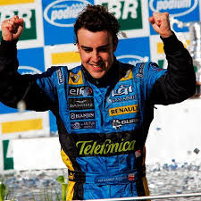

Formula 1
F1
Fernando Alonso
Fernando Alonso Díaz (Oviedo, Asturias; 29 de julio de 1981) es un piloto de automovilismo español, galardonado como Premio Príncipe de Asturias en 2005. Ha ganado dos veces el Campeonato Mundial de Fórmula 1 en 2005 y 2006 con el equipo Renault, resultó subcampeón en 2010, 2012 y 2013 con la escudería Ferrari, y obtuvo un tercer puesto en 2007 con McLaren. Fue campeón del Campeonato Mundial de Resistencia de la FIA en 2019, las 24 Horas de Le Mans en 2018 y 2019, las 24 Horas de Daytona de 2019 y el Campeonato Mundial de Karting en 1996. En 2017, fue incluido en el Salón de la Fama de la FIA. En 2019 volvió a entrar como campeón del WEC, convirtiéndose en el primer piloto de la historia en estar dos veces en el Salón de la Fama por pertenecer a la lista de campeones de dos categorías mundiales de la FIA diferentes.
